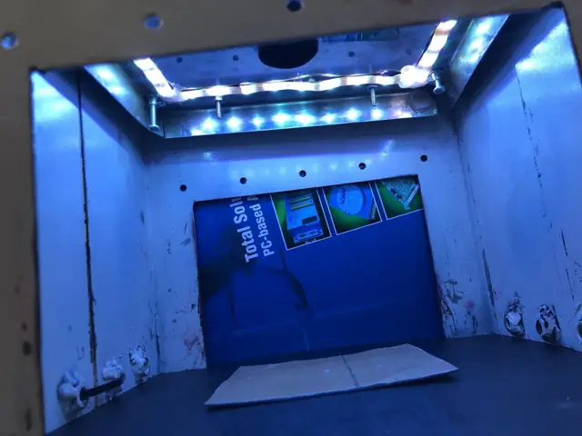
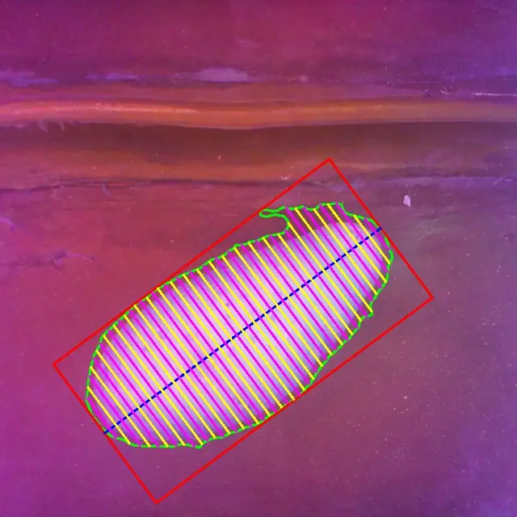
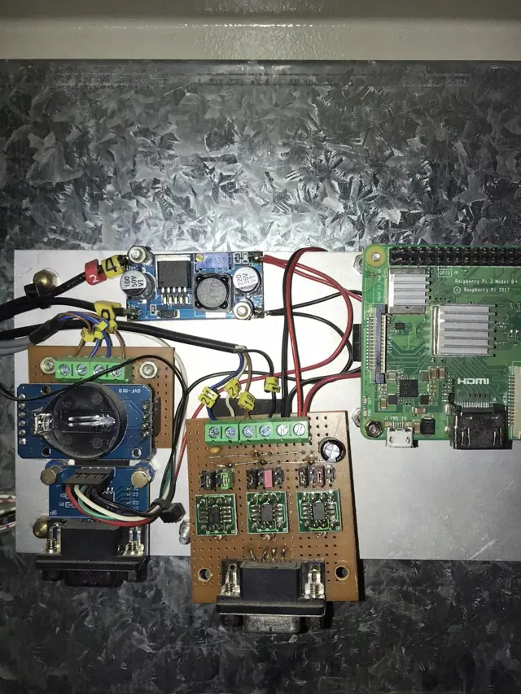
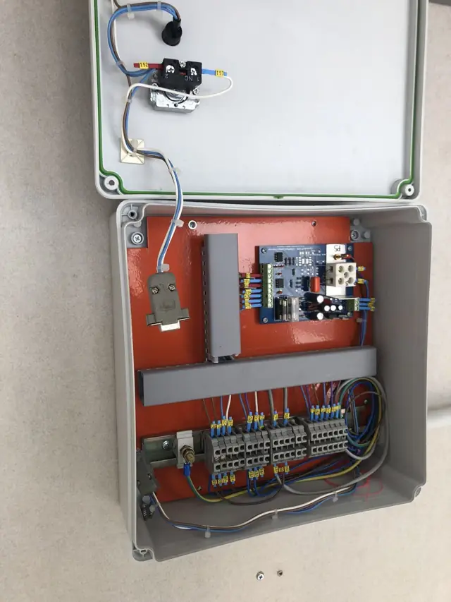
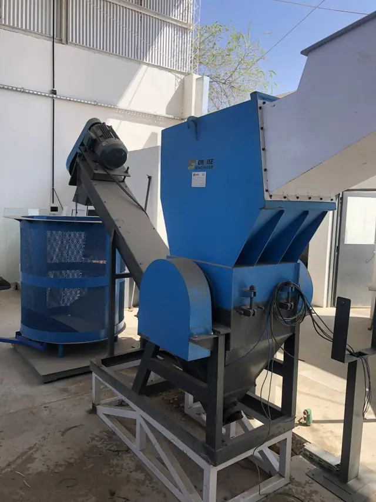
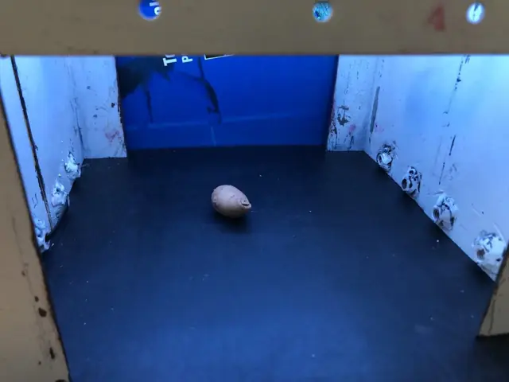

01 / 05
Saatkartoffel-Sortierer U9
Im Einsatz
Die Maschine wiegt jede Kartoffel mit einer Kamera und leitet sie in einen von 6 Behältern.
- Ein Raspberry Pi nimmt das Bild auf, segmentiert die Kontur und berechnet das Volumen. Aus dem Volumen schätzt er das Gewicht.
- Ein dsPIC33F steuert Servos, Förderbänder und Klappen. Er liest auch die Kalibrierwaage.
- Ein zweiter Raspberry Pi betreibt den Touchscreen für den Bediener.
- Er sortiert in 6 Gewichtsklassen: von 0–5 g bis über 60 g.
- Er protokolliert jede Ernte nach Woche und Jahr. Er warnt, wenn ein Behälter voll ist.
- Beim Start prüft sich die Maschine selbst. Die Kalibrierung führt Schritt für Schritt.
- Ich habe das Bedienerhandbuch geschrieben und die Maschine beim Kunden in Betrieb genommen.











